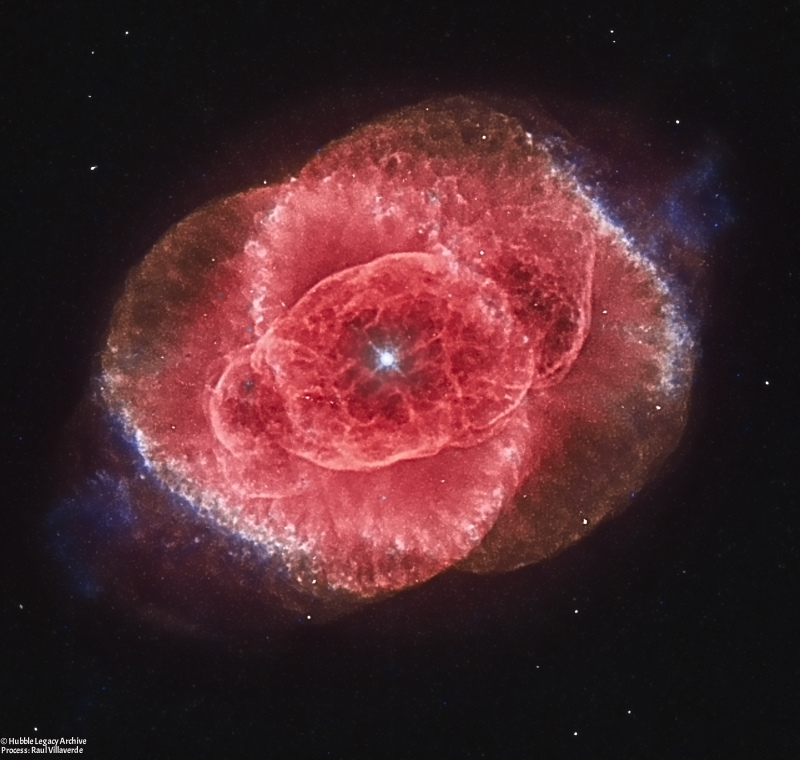
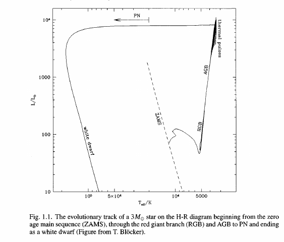
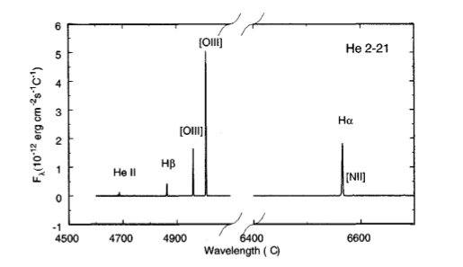
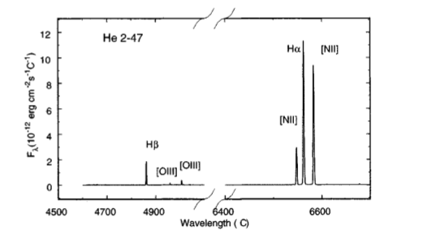

Nebulosas Planetarias: Método de Zanstra
Introducción
Antes de comenzar a hablar sobre el método de Zanstra debemos hacernos las siguientes preguntas: ¿Para qué sirve?,¿A qué objetos del espacio se aplica?,¿Cómo son estos objetos? y una pregunta no menos importante, ¿Quién fue Zanstra?
El astrónomo holandés Herman Zanstra, nacido un 3 de Noviembre de 1894 en Heerenveen, se formó en la escuela técnica de Delft, graduandose como ingeniero químico en 1917. Después de enseñar en la misma universidad y la escuela secundaria de Delft, Zanstra fue a la Universidad de Minnesota en 1921 para trabajar como instructor de física, y allí obtuvo su doctorado en 1923. En 1927 en su paper nombrado "An Application of the Quantum Theory to the Luminosity of Diffuse Nebulae" desarrolló un método cuantitativo para comprender la luminosidad de las nebulosas. Luego, utilizando la luminosidad podemos determinar la temperatura de la estrella central de la Nebulosa Planetaria.
Nebulosas Planetarias: Resumen
No fue hasta 1764 que Charles Messier observó la primera nebulosa planetaria. El nombre "Nebulosa Planetaria" (PN) se lo dio William Herschel quién encontró su apariencia similar a la de un disco planetario. Lo que distingue a las PN, de otros objetos nebulosos, es que tienen estructuras definidas, a menudo con forma de ovalos, discos o anillos, que tienen asociada una estrella que se encuentra aproximadamente en su centro. Recién en 1864, William Huggins tomó el primer espectro a la nebulosa planetaria NGC6543 (Nebulosa Ojo de Gato). Se encontró que su espectro estaba dominado por líneas de emisión y no era continuo como el espectro de una estrella. Por esto se pensó que su luminosidad no podría deberse a la luz reflejada por la estrella central. En 1922 Hubble, encontró una correlación entre la magnitud de la estrella central y el tamaño de la nebulosa; y basándose en esto, argumentó que las lineas de emisión en el espectro de una PN tendrían que ser efecto de la continua radiación emitida por la estrella central que absorbe la nebulosa. En 1926 Menzel para explicar el ancho de la línea Hß sugiere que toda la producción estelar mas allá del límite de Lyman(912 A) debería ser utilizada para ionizar el átomo de hidrógeno.

Nebulosa Planetaria NGC6543 Ojo de Gato
A pesar de haber pasado un poco mas de medio siglo, aún habían varias lineas nebulares sin identificarse y se llegó a sugerir que podrían ser causa de un nuevo elemento llamado "nebulium". Pero, el ancho de las lineas condujo a la conclusión de que se podrían originar de elementos conocidos de gran abundancia pero emitidos bajo condiciones inusuales. Russell (1927) especuló que ciertos átomos con estados metaestables, los cuales no tienen el tiempo para emitir radiación a causa de la desexcitación colisional en la alta densidad del ambiente terrestre, radiarían bajo condiciones interestelares. En 1928 Bowen identificó 8 de las lineas nebulares mas fuertes como debidas a los estados metaestables del N+, O+ y O++. Estos estados se encuentran a pocos eV por arriba del primer estado y pueden ser excitados colisionalmente por electrones liberados por la fotoionización del hidrógeno.
En 1941 Menzel y Aller demostraron que sin importar cuan caliente sea la estrella central, la temperatura de los electrones se limitara a temperaturas menores a 20000 K. Con mejor resolución espectral se descubrió que las lineas de emisión en PN son amplias e incluso se dividen. Perrine (1929) interpretó esto correctamente como una expansión de la nebulosa y no como una rotación. Asumiendo un tamaño de 0.3 pc y una velocidad de expansión de 30 km/s se pudo estimar que el tiempo de vida dinámico de la NP es aproximadamente 104 años.
El entendimiento teórico sobre el origen de las PN empezó con Shklovsky en 1956, cuando sugirió que las PN son progenitores de Enanas Blancas (WDs) y descendientes de Gigantes Rojas. En 1966 Abell y Goldreich argumentaron que las nebulosas son las atmósferas eyectadas por una gigante roja, basandose en la velocidad de expansión de una PN y la velocidad de escape de una gigante roja. Tambien demostraron que las PN deben formarse a una tasa de 3 por año, y ya que esto es del mismo orden que el número de estrellas dejando la secuencia principal, ellos sugirieron que practicamente todas las estrellas de baja masa pasarían por el estado de PN.

Basandose en su apariencia difusa, las PN fueron catalogadas junto con galaxias y cúmulos como parte del New General catalog of Clusters and Nebulae (NGC) en 1887 y muchas aún llevan su designación "NGC". En los descubrimientos de PN se han utilizado varios métodos, por ejemplo:
- Usando placas fotográficas o CCD.
- Comparando en el rojo e infrarrojo con las placas del National Geographic-Palomar Observatory Sky Survey (POSS)
- Buscando fuentes de emision de radio desde Infrared Astronomical Satellite (IRAS)
- Estudiando sistematicamente cúmulos globulares y el galactic bulge.
- Esudiando las emisiones de H\alpha en el plano galático
Muchas PN estan ocultas por efecto de la extinción interestelar en el plano galáctico y muchas otras ubicadas al otro lado del centro galáctico no se ven. Las PN viejas tienen muy poco brillo en su superficie y son dificiles de identificar. Las PN distantes tienen apariencia estelar y no se pueden distinguir facilmente de las estrellas. Se estima que el número de Nebulosas Planetarias en la galaxia puede ser 10 veces mayor a al que conocemos.
Mecanismo propuesto para explicar la luminosidad en una nebulosa
En un principio Zanstra se propuso investigar cómo es que se generaban los espectros de emisión que observaban en las nebulosas. A éstas se las dividía en dos tipos: nebulosas difusas y nebulosas planetarias. Nosotros nos enfocaremos sólo en las segundas.
Lo que observó en los espectros que se tomaban de estos objetos, fue que estaban formados por varias lineas simples y que tambien mostraban un espectro continuo que comenzaba desde, aproximandamente, la cabeza de la serie de Balmer y se extendía hacia el ultravioleta (UV). Como las estrellas centrales de las PN tienen temperaturas muy altas y no se conocian estrellas de tipo B1 en adelante que generen espectros nebulares (de emision), Zanstra notó que la temperatura de la estrella asociada a la nebulosa es el factor principal para determinar la intensidad del espectro de emisión que se podía ver. Entonces, lo que hizó fue reemplazar a la estrella central por un cuerpo negro de temperatura superficial T y suponerla como una esfera de radio R; todo esto para poder utilizar la fórmula de Planck y así calcular la cantidad de fotones que eran interceptados por una parte de la nebulosa para una dada frecuencia.
Luego tomó como medida aproximada de la intensidad fotografica de la luz estelar interceptada al número de fotones que, bajo condiciones de observación normales, pudieran afectar a una placa fotográfica. Usando un reflector, solo los fotones que tuvieran frecuencias entre v1=5.95 x 1014 s-1 y v2=9.10 x 1014 s-1 podrían cumplir esa condicion, pues los límite de longitud de onda larga de una placa fotográfica ordinaria son aproximadamente 5050 A y 3300 A por la absorción atmosférica.

Espectro típico de una Nebulosa Planetaria

Espectro de baja excitación de una Nebulosa Planetaria
En los espectros de emisión que observó, la serie de hidrógeno de Balmer era muy importante, lo que indicaba que las nebulosas estaban compuestas de ciertos gases, de los cuales el hidrógeno atómico es el más activo en la producción de la luminosidad. Basandose en esto, simplificó el problema suponiendo que la nebulosa consistía totalmente de hidrógeno, una cantidad apreciable de la cual era atómica. Como la nebulosa puede absorber una parte de la radiación que intercepta de la estrella central, utilizó dos mecanismos cuánticos para explicar dicha absorción:
- En primer lugar, un átomo de hidrógeno en su estado normal puede absorber las diferentes frecuencias de la serie de Lyman, y el átomo así excitado posteriormente volverá a su estado normal, ya sea directamente o en pasos, el electrón volverá a caer a diferentes niveles de energía antes de que alcance el nivel más bajo. Al hacer esto, vuelve a emitir una serie de espectros de línea, entre otros, la serie de Lyman y la serie de Balmer. El mecanismo de excitación ordinaria explica de esta manera cierta luminosidad en la nebulosa. Sin embargo, este efecto es demasiado débil para dar cuenta de la luminosidad total observada, y no se consideró más a fondo.
- El segundo mecanismo es el de la ionización y la recombinación posterior. Un átomo en su estado normal es capaz de absorber toda la energía de una longitud de onda mas corta que el límite de Lyman (912 A), cuya frecuencia es v0 = 32.84 x 1014 s-1. Para cada paquete hv absorbido, un electrón es expulsado del átomo y se convierte en un electrón libre con cierta velocidad que dependerá de la frecuencia del foton absorbido. Estos electrones libres se recombinarán con los núcleos volviendo a caer a uno de los diferentes niveles emitiendo el espectro continuo al inicio de la serie de Lyman, de la Serie de Balmer,de la serie de Paschen, etc. Posteriormente, los electrones en los niveles superiores 2, 3, 4, etc., volverán al nivel normal 1, ya sea directamente, bajo emisión de la serie de Lyman, o en pasos, emitiendo las otras líneas de hidrógeno, entre otras la serie de Balmer. De esta manera, se volverán a emitir una serie de espectros continuos y espectros de línea, y esto explicaría la serie de Balmer en el espectro nebular, así como el espectro continuo que a veces se observa a partir de su primer linea.
Asumiendo a la nebulosa en un estado estacionario, es decir, que tantos átomos se ionizan por unidad de tiempo como átomos regresan del estado ionizado al estado normal, entonces, puesto que el número de electrones emitidos fotoeléctricamente desde el primer nivel es igual al número de fotones ultravioleta absorbidos, Nul, el número de electrones que retroceden al primer nivel es también Nul. Por lo tanto, el número de fotones re-emitidos por la nebulosa, ya sea como el espectro continuo a la cabeza de la serie de Lyman o como líneas de la serie de Lyman, es igual a Nul. Sin embargo, Zanstra tenía razones para creer que prácticamente todos los fotones de Lyman finalmente dejarian la nebulosa como la primera línea de la serie de Lyman Ly$\alpha$. Sus razones se basaban en lo siguiente:
Por ejemplo, si tomamos la línea Lyß. Esta línea, después de haber sido producida por primera vez, puede, en su salida de la nebulosa, excitar otro átomo de hidrógeno al nivel 3; este segundo átomo puede entonces re-emitir la primera línea de la serie de Balmer H$\alpha$ y posteriormente Ly$\alpha$, o puede volver a emitir Lyß. En el segundo caso, el fotón Lyß, en su salida de la nebulosa, puede ser absorbido por otro átomo de hidrógeno y ser re-emitido, ya sea como un fotón $H\alpha$ y un fotón Ly$\alpha$, o como el fotón Lyß. Si esta absorción y re-emisión secundaria se produce un número suficiente de veces, toda la radiación original Lyß se habrá dividido en $H\alpha$ y $Ly\alpha$. En otras palabras, la división de todos los fotones Lyß en $H\alpha$ y $Ly\alpha$ será completo, si el coeficiente de absorción de Lyß es suficientemente grande en comparación con la absorción original de el espectro continuo. Esta condición se cumple presumiblemente, ya que, en general, cabe esperar que el coeficiente de absorción para una sola línea espectral sea mucho mayor y tal vez incluso de un orden totalmente diferente al del coeficiente de absorción para el espectro continuo a la cabeza de la serie. Realizando un razonamiento similar para las líneas $Ly\gamma$, Lyð, etc., llegaremos al mismo resultado.
En resumen, el mecanismo se basa en la idea de que los electrones liberados fotoeléctricamente por la luz UV de las estrellas son recapturados por los diferentes niveles del átomo de hidrógeno y volveran a caer al nivel más bajo, ya sea directamente o en etapas, produciendo así espectros de línea. La imagen física más detallada de esta recaptura implica que la probabilidad de recaptura por los niveles más bajos se hace relativamente mayor, a medida que la velocidad del electrón libre aumenta. Por lo tanto, cuanto más alta sea la temperatura de la estrella, más electrones estarán presentes en los niveles inferiores después de esta recaptura. Pero un electrón en un nivel inferior no puede producir una línea de la serie de Balmer que se origine en un nivel superior. Por lo tanto, a medida que la temperatura de la estrella aumenta, la captura de los electrones por los niveles más bajos resultará en un fortalecimiento de las primeras líneas de la serie de Balmer en comparación con las líneas más altas y así dará cuenta, de manera cualitativa, del fenómeno observado.
Relación entre la Luminosidad de la nebulosa y la Temperatura de la estrella central
El método de Hubble para obtener el valor empírico de L, la relación entre la luminosidad nebular y la luz de la estrella interceptada, implicaba la magnitud fotográfica m de la estrella y la máxima extensión angular a1 de la luminosidad nebular en la placa fotográfica para una exposición de una hora. Zanstra, extendiendo la luminosidad de la estrella sobre un cascarón esférico de radio a1, en el supuesto implícito de que la luz es reemitida por la nebulosa uniformemente en todas las direcciones, corrige el hecho de que la línea que conecta la estrella con el punto extremo de la nebulosidad no es perpendicular a la línea de visión.
De esta forma, comparando el valor calculado para la magnitud con el valor teórico, si el primero es mayor al segundo tendremos que el brillo de la Nebulosa es mayor al brillo de la estrella. Así, el valor empírico de la luminosidad L puede ser calculado. Una vez conocida L la temperatura puede ser calculada por interpolación.
Un dato curioso es que en el paper al que hicimos referencia en la Introducción, Zanstra no hablo detalladamente sobre como se relacionaba la Luminosidad de la nebulosa con la Temperatura de la estrella central, pues hasta ese momento las lineas de emisión que no se lograban identificar se las atribuían a un elemento llamado "nebulium". Por lo tanto las aproximaciones que habian tomado, para una nebulosa difusa, no podrian ajustarse satisfactoriamente. Sin embargo para él, el hecho significativo fue que el mecanismo de ionización y recombinación podía explicar una luminosidad nebular fotográfica muy superior a la de la luz de las estrellas interceptada. Y que el mecanismo requería, en promedio, una temperatura de la estrella central muy superior a 33000 K. Todo esto estaba en línea con la evidencia presente, por ejemplo, de la distribución de la intensidad en el espectro continuo de la estrella central.
H. H. Plaskett, casi al mismo tiempo, obtuvo un interesante resultado de observación investigando las relaciones de intensidad de las líneas de la serie de Balmer en una nebulosa planetaria típica y una nebulosa difusa típica. Encontró que la disminución de la intensidad hacia las líneas superiores de la serie es mucho más rápida en las PN que en las difusas. Tambien que la temperatura de la estrella asociada a la PN debería ser mucho más alta. Por lo tanto en el caso investigado por Plaskett, una temperatura más alta de la estrella asociada (central) va acompañada de un fortalecimiento de las primeras lineas de la serie de Balmer con respecto a las lineas más altas. Este hecho encajaba bastante bien con el mecanismo de luminosidad propuesto por Zanstra. Además Plaskett señaló que la distribución de la intensidad observada por él no podría entenderse si el mecanismo de luminosidad fuera uno de excitación ordinaria, porque en ese caso uno esperaría que las líneas que requieren una mayor excitación se volvieran relativamente más fuertes a medida que la temperatura de la estrella aumenta. Por lo tanto las observaciones de Plaskett fueron una prueba adicional y aparentemente concluyente de que el mecanismo principal causando la luminosidad era el propuesto, de ionización y recombinación, y no el de la excitación ordinaria (Como Zanstra supuso).
Espectros continuos de nebulosas
El espectro continuo en una nebulosa se debe a la luz de las estrellas que es reflejada por la presencia de particulas sólidas o liquidas. Si los gases también están presentes, puede esperarse un espectro de emisión nebular débil que, si es suficientemente fuerte, aparecerá contra el fondo continuo. La presencia de ambos espectros juntos permite obtener un valor aproximado de la intensidad del espectro de emisión comparándolo con el espectro continuo, lo que conduce a un valor teórico de la temperatura de la estrella asociada.
La ausencia de líneas de emisión no significa necesariamente una baja temperatura de la estrella, pero si las líneas de emisión están presentes, parece probable que la absorción de la luz UV de la estrella sea completa y que las intensidades de línea puedan ser utilizadas para la determinación de la temperatura.
Conclusión
Zanstra desarrolló un método para derivar la temperatura de la estrella central comparando la magnitud del espectro de emisión con la magnitud del continuo estelar. Este método se basa en el supuesto de que el número de fotones de Lyman absorbidos en la nebulosa es igual al número total de recombinaciones a todos los niveles, excluyendo el estado de la base.
Dado que el método Zanstra asume que la nebulosa es ópticamente gruesa en el continuo de Lyman, y dado que la PN cambia de ópticamente gruesa a ópticamente delgada en H y He en diferentes momentos, esto puede llevar a diferentes estimaciones de la temperatura de la estrella central usando líneas de H o de He. El hecho de que las atmósferas estelares no estén bien aproximadas por los cuerpos negros también puede contribuir a errores en las temperaturas de Zanstra. Sin embargo, se puede argumentar que dado que las estrellas centrales tienen una gran variedad de tipos y abundancias espectrales, la suposición del cuerpo negro probablemente no es peor que la de cualquier conjunto específico de modelos atmosféricos. El principal problema sigue siendo, sin embargo, que este método requiere la medición de la magnitud estelar. Dado que el continuo nebular es a menudo más brillante que el continuo fotosférico estelar, una medida de la magnitud estelar puede tener errores muy grandes, o simplemente ser imposible de tomar.
Referencias
- Kwok S., (2007), The Origin and Evolution of Planetary Nebulae, Cambridge, Cambridge University Press.
- Zanstra H.,(1927), An Aplication of the Quantum Theory to the Luminosity of Diffuse Nebulae, Astrophysical Journal, vol. 65, p.50-70.
- Hockey T.,(2007), The Biographical Encyclopedia of Astronomers., New York, Springer Science+Business Media, LLC.